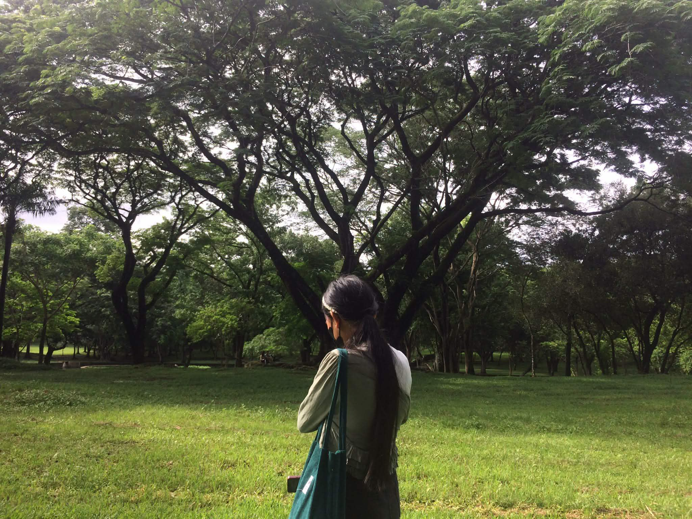

IT Girl or It Girl : Just a girly who got curious about technology.
Hello everyone, I'm Faye an it girl and an IT girl at the same time currently studying Information Technology. This blog is where I share my experiences, the skills I have learned and the challenges I face as a student in the field of technology while also loving girly things that are not usually associated with this field.
All this time all I cared about were makeup, fashion and other girly stuffs, when technology caught my attention I became curious about how technology works in this growing digital world. That curiosity slowly turned into an interest and eventually led me to pursue Information Technology.